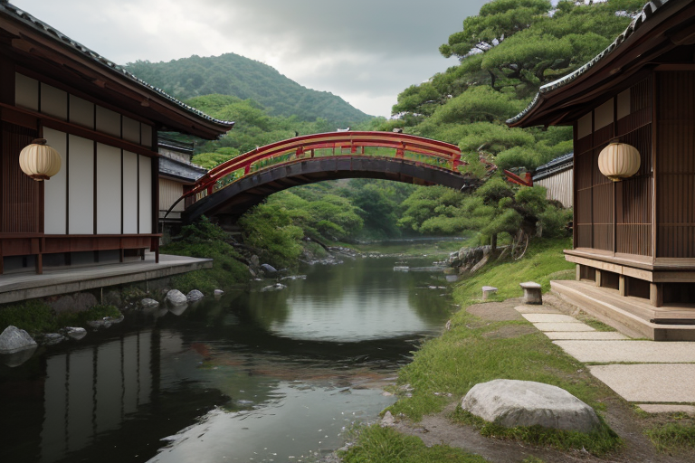
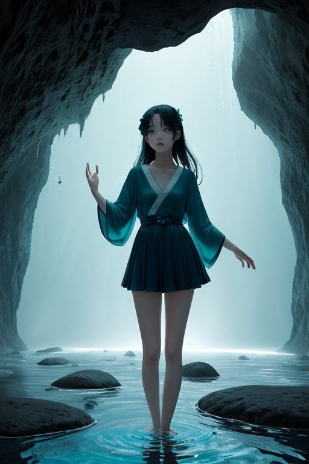
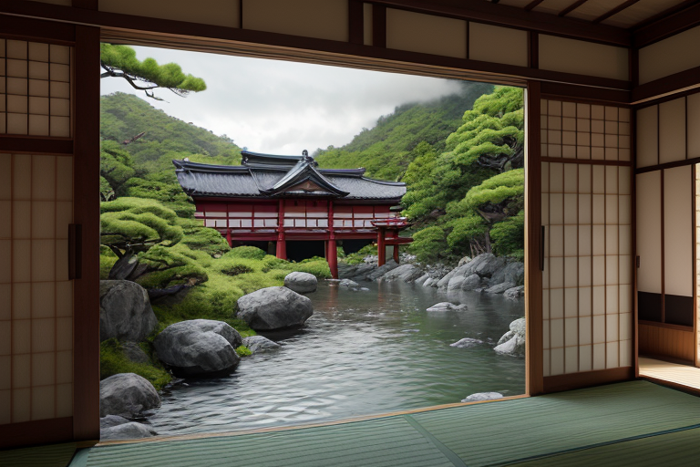
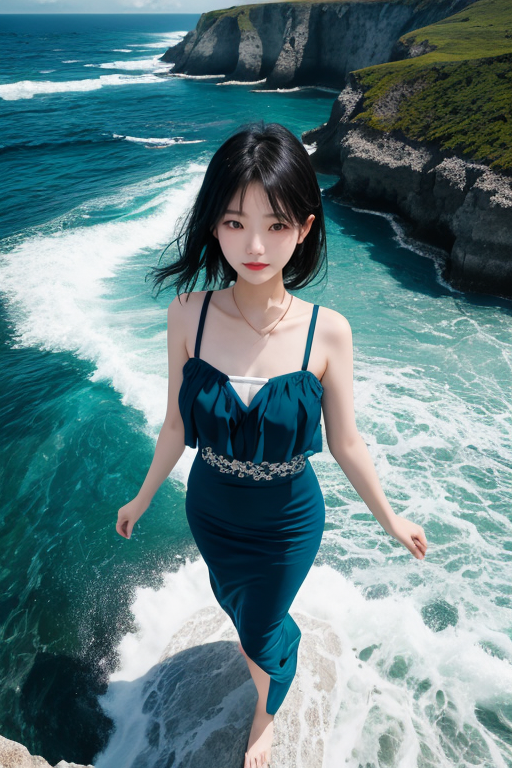
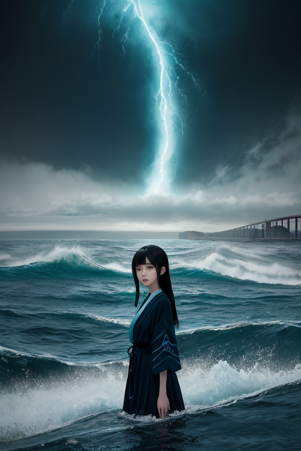

第一章 現実の山口
あなたはまだ気づいていない。この土地にも、王がいることを。
松下村塾の木造の小さな建物は、静かに杉の木陰にたたずんでいる。観光客が入れ替わり立ち替わり、その狭い板の間に足を踏み入れる。彼らは何を思うのだろう。ここから、国の流れを変えようとした一人の男と、彼に触発された若者たちの熱気を。今はただの史跡だ。しかし、この場所には、かつて「変革」という名の、目に見えない巨大な潮流が渦巻いていた。その余波は、今も土地に染み込んでいる。
錦帯橋のアーチが岩国川の水面に映る。五連の木造の橋は、何度も流され、何度も再建された。人々はその美しさにため息をつくが、それは単なる美観ではない。流れに抗い、再び架け直すという、この土地の不断の意志の形だ。瓦そばの器に注がれる透明なつゆ。萩焼のざらりとした肌触り。どれも、この地で培われ、変わりながらも受け継がれてきた「かたち」である。
歴史は動いた。その瞬間、人々は自らの意志で流れを変えようとした。だが、その意志だけでは、全てはうまくはいかない。ほんの少し、ほんのわずかな「調整」が必要だった。

第二章 歪みの兆候
秋芳洞の深部、百枚皿の水面は絶えず滴りで満たされ、千年の時を刻んでいる。その静謐さは、地底に潜む巨大なエネルギーの沈黙でもあった。潮流王ヤマグチア・リバースは、洞窟の奥で微かに震える石筍に手を触れた。指先から伝わるのは、地殻の深部で蓄積されつつある「歴史の歪み」の振動だ。
明治維新という大変革の波。それは確かに新しい流れを生んだが、その急激な転換が地層に残した「ひずみ」は、時を超えて現代に微弱な振動として伝わっていた。松下村塾で語られた過激な思想の奔流、下関海峡を砲煙が覆った緊張。それらが集合的無意識に刻んだ断層が、今、物理的な地盤の微妙な不安定さと共鳴し始めている。
妖精リヴァナが現れ、手に持つ潮流計の針が不規則に揺れた。「王、歪みの波長が維新期のものと一致します。このままでは、地盤の微調整だけでは収まらない『流れ』が生じかねません」
王は目を閉じた。かつて志士たちが己の信念で時代の流れを変えようとしたように、今、彼はその結果生じた余剰なエネルギーを、静かに、目立たない形で分散させねばならない。流れを変える勇気の代償は、長い時間をかけて支払われる。

第三章 王の葛藤
松下村塾の小さな板の間。かつて松陰が若者たちに語りかけたその場所で、王は立ち尽くしていた。歪みの波長は確かに維新期のものだ。志士たちの熱狂、挫折、決意──それらが地層に染み込み、今、地殻の微細なひずみとして噴出しようとしている。
「このままでは、断層の滑りが『歴史の再演』を呼び起こす」リヴァナが警告した。「小さな地震が、人々の心に変革への衝動を植え付ける。それは良い流れか、無用な混乱か。」
王は錦帯橋を思い浮かべた。五連のアーチは、流れに逆らわず、しかし確固として川を渡る。変革とは、流れを無理にせき止めることではない。方向をほんの少し変えることだ。彼は感情というものをまだ完全には理解していない。だが、松陰がこの地で感じた「未来を切り拓く覚悟」の重さが、今、彼の回路に流れ込んでくる。
止めるべきか、促すべきか。答えはない。彼にできるのは、暴走するエネルギーを、そっと分散させることだけだ。

第四章 妖精との対話
角島大橋を渡る風は、いつもより鋭かった。潮流王は、白い波頭が砕ける海峡を見下ろしていた。彼の傍らに、半透明の体を潮流の青に染める主席妖精リヴァナが現れた。
「この海峡は、幾度も歴史の流れを変えた場所です」リヴァナの声は波音と同調していた。「黒船も、砲撃も、すべては新しい流れの始まりでした。王よ、あなたは今、もう一つの変革の波を感じていますね」
王は頷いた。地中深く、プレートの歪みが蓄積している。それは破壊的なエネルギーだ。
「妖精たちは、そのエネルギーを『変革波』と呼びます」リヴァナは続けた。「無理に抑えれば、後でより大きなしわ寄せが来る。しかし、適切なタイミングで少しずつ解放すれば、それは新たな地殻、新たな秩序を生む礎になる。松下村塾で松陰先生が志士たちに説いたように、変革には痛みが伴います。流れを変えるとは、そういうことです」
王は、萩焼の茶碗が窯の中で形を変える時の、きしみと熱を思い浮かべた。彼は感情を持たないはずだった。だが、この地の「覚悟」の密度が、彼の判断に「躊躇」という微かな影を落としていた。
「リスクを計算せよ、と星は命じます」王は呟くように言った。「だが、この土地は、計算を超えた何かを教えようとしている」
「その『何か』こそが、私たちが補正するべきものかもしれません」リヴァナの目が、変革の青く深い輝きを放った。

第五章 微調整と余韻
角島大橋を渡る潮流が、一秒だけ、不自然に淀んだ。王は、下関海峡の海面に立っていた。彼の眼前で、歴史の分岐点が一点に収束しようとしている。黒船来航、高杉晋作の挙兵、講和条約調印。幾重にも積もった「変革」の波が、今、一つの巨大な津波となってこの地を呑み込もうとしていた。星の命じる「最適化」は、これを三割減衰させ、被害を限定することだ。
しかし、リヴァナが示したのは、別の波紋だった。減衰ではなく、ほんのわずかな「方向転換」。津波の主力を無人島へと逸らす代わりに、王の存在の大半を「代償」として海に沈める。計算上は無意味な行為。感情を持たぬ王にとって、選択の理由はない。
瓦そばの湯気のように立ち昇る、この土地の「覚悟」の密度が、最後の判断を下した。藍色の光が海峡を覆い、潮流は目に見えて曲がった。無人島が轟音と共に砕け、市街地を襲う波は、かすかな水しぶきに変わった。
王の姿は消え、潮風に混じって微かな残響だけが残る。代償は大きかった。だが、萩焼の窯変のように、予期せぬ一筋の青が、歴史の陶肌に焼き付いた。
あなたの町にも、王がいる。